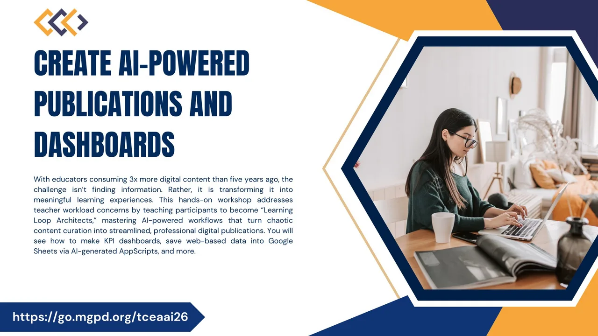
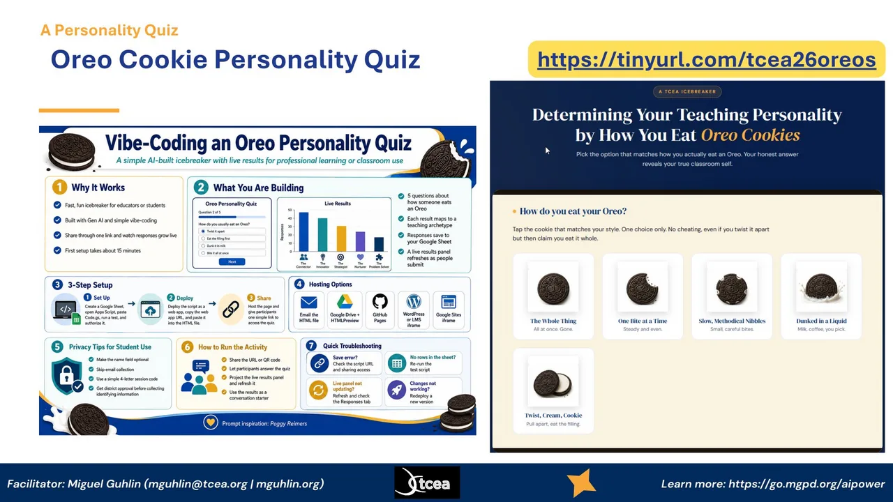
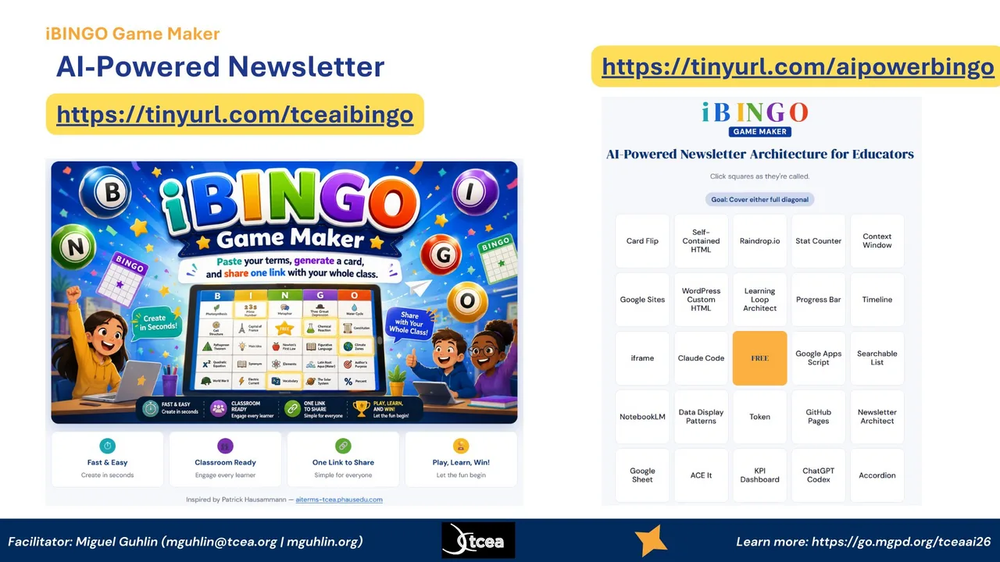
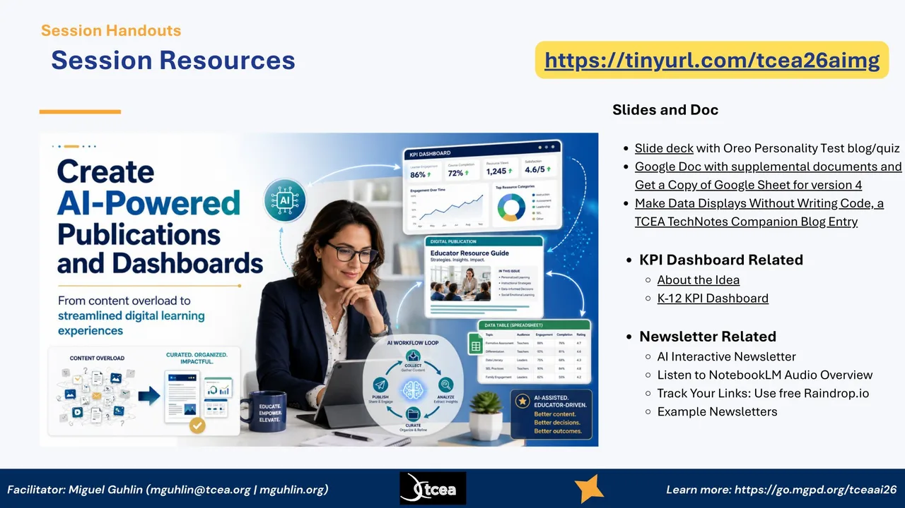
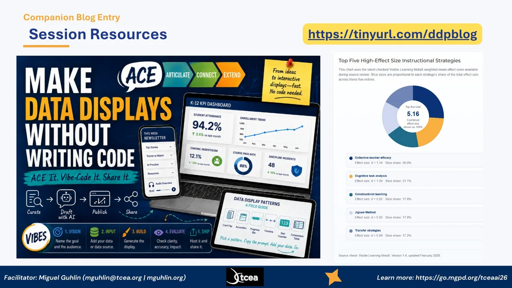
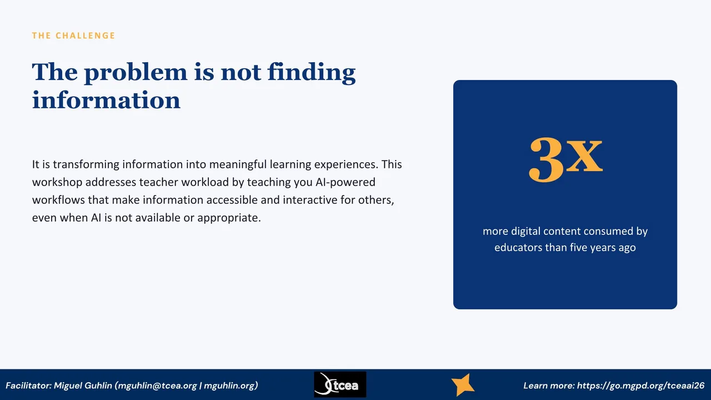
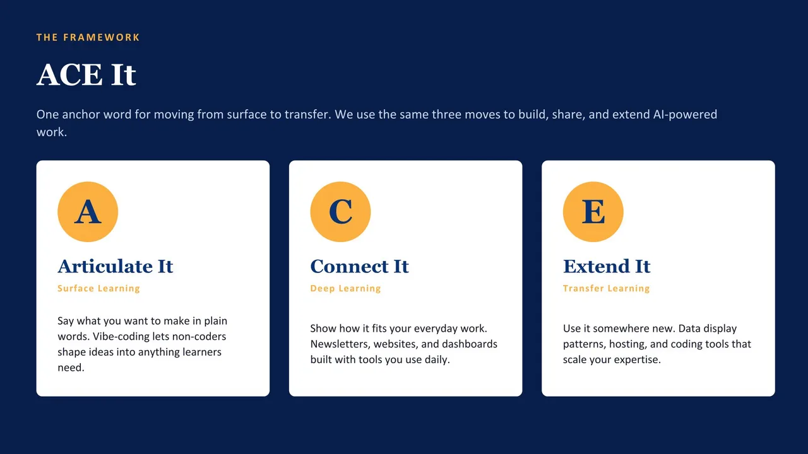
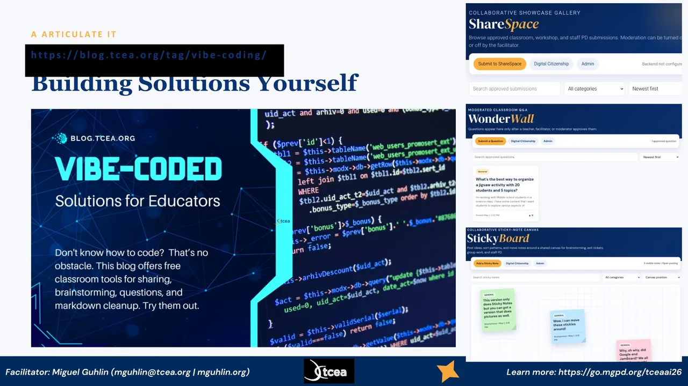
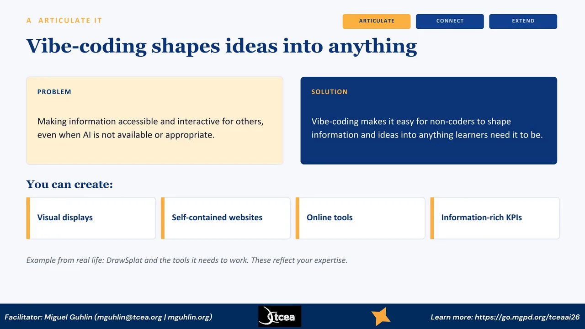

Welcome, everyone. Today we are going to create AI-powered publications and dashboards. Educators are reading about three times more digital content than they were five years ago, so the problem is not finding information, it is turning it into something a learner or a colleague can actually use. My goal is for you to leave as a Learning Loop Architect, someone who turns chaotic content curation into clean, professional digital work. I am going to show you how to make KPI dashboards, how to save web data into Google Sheets with AI-generated Apps Script, and a lot more, all with tools you already have.

Before we dig in, let us do a quick icebreaker that doubles as a demo. This is an Oreo Cookie Personality Quiz, and it tells you your teaching personality by how you eat an Oreo. The whole thing was vibe-coded with AI, the live results save to a Google Sheet, and you share it with one link. So while you are having fun picking whether you twist it apart or dunk it, you are also seeing exactly the kind of self-contained, shareable tool we are going to build today. Pull out your phone, go to the link on the screen, and pick the option that matches how you really eat an Oreo.

Here is a second quick one, and it is how we will move through the ideas in this session. This is iBINGO Game Maker. Each square is a concept we are going to touch today, things like Card Flip, Self-Contained HTML, Raindrop, the Learning Loop, ACE It, KPI Dashboard. As I cover each one, you mark the square. The goal is to cover a full diagonal. Like the Oreo quiz, it was built by pasting terms, generating a card, and sharing one link. So the game itself is another example of the workflow. Go to the link on the screen and grab your card.
A quick word about who is leading this. I am Miguel Guhlin, and I have spent my career transforming work through technology, from the classroom up to the district level. I have been a District Technology Director, an Instructional Technology Director, an online master's on-site coordinator and professor of record, and a K-12 classroom teacher. These days I serve as Director of Professional Development for TCEA. In that role I write a lot, blog posts and online courses, with a recent focus on AI in education. Everything I am showing you today comes out of that day-to-day work, not theory.

Here are your session resources, and I want you to grab this link now so you have everything for later. Behind this one link you will find the slide deck, a Google Doc with supplemental documents, and a copy of the Google Sheet for version four. There is a companion blog entry on making data displays without writing code. You also get the KPI dashboard materials, the AI interactive newsletter, a NotebookLM audio overview, and example newsletters. Do not try to write all this down. Just save the link on the screen and you will have the whole kit when you get back to your campus.

This is the heart of where we are going, captured in one image. Make data displays without writing code. The path is ACE It, then vibe-code it, then share it. You curate, draft with AI, publish, and share, using the VIBES steps you see at the bottom: Vision, Input, Build, Evaluate, Ship. On the right is the kind of result you can produce, a clean dashboard, a newsletter, and the data display patterns field guide. The chart shows the top five high-effect-size instructional strategies from the latest Visible Learning MetaX data, because the goal is never just a pretty display, it is moving student learning. The companion blog at this link walks through all of it.

Let me set up the real problem. We are not short on information. Educators are consuming about three times more digital content than we were five years ago, which you see in the number on the right. The challenge is what we do with all of it. Turning that flood into a meaningful learning experience for someone else is the hard part, and it is where most of our time goes. So this session is really about workload. I want to show you workflows that make your information accessible and interactive for other people, even in situations where AI is not available or is not the right tool to reach for.

Here is the spine of the whole session. ACE comes out of my work with SOLO Taxonomy and Hattie's surface, deep, and transfer learning phases. The idea is one anchor word you can actually remember. Articulate, Connect, Extend. I use the same three moves for building things. Articulate It is naming what you want in plain words, which is surface learning. Connect It is fitting that into the work you already do, the deep phase. Extend It is taking it somewhere new, the transfer phase. Everything in the rest of this session hangs on these three cards, so keep them in mind as we go.

Articulate It starts with realizing you can build solutions yourself, even if you do not code. This is a blog series on vibe-coded solutions for educators, free classroom tools for sharing, brainstorming, questions, and markdown cleanup. On the right you can see three of them in action. ShareSpace is a collaborative showcase gallery. WonderWall is a moderated classroom question board. StickyBoard is a shared sticky-note canvas for brainstorming and exit tickets. None of these required me to be a developer. I described what I wanted and the AI built it. That is the whole promise of Articulate It.

Let me make Articulate It concrete. The problem is making your information accessible and interactive for other people, even when AI is not in the room. The solution is vibe-coding. You describe what you want in plain language and let the AI shape it into working code. You do not need to be a coder. With that, you can create visual displays, self-contained websites, online tools, and information-rich KPIs, which you see in the row at the bottom. One example from my own life is a tool I built called DrawSplat. The point is that what you build reflects your expertise, not the AI's.
Three sections readers can expand, a pull-quote, and a sources list, all in one file with no backend.
Let me show you what one of these actually looks like when it is finished. This is the AI Interactive Newsletter. The reader sees a headline, a short intro, and then a set of collapsible sections. A busy principal can open only the part they care about. There is also an audio overview I generate with NotebookLM, so someone can listen on the drive home instead of reading. Three things make this work. It is collapsible so it respects the reader's time. It is self-contained, so it embeds in WordPress through an iframe. And I did not start from a blank page. I drafted it from the sources I had already saved in Raindrop. That is the whole loop in one artifact.
Build information-rich dashboards from your own data. Generated with Gen AI, hosted as a single self-contained page.
This is the K-12 KPI Dashboard Generator. The chart you see is mock data, but the structure is real. You feed in your own numbers, attendance, reading, math, engagement, whatever you track, and you get a clean dashboard you can hand to a principal or a board. Three things make this practical. It is a single self-contained HTML file, so there is nothing to install. The data comes from a Google Sheet you control. And you can host it free on GitHub Pages. So the whole thing lives in places you already have access to, and you are not depending on a vendor to keep it alive.
Ask the AI to write the Apps Script for you. Paste it into your Sheet, run it, and your data updates itself. No code experience needed.
Tell the AI what data and which sheet.
It writes the Apps Script for you.
Drop it in, authorize, run once.
Set a trigger, it refreshes on a schedule.
Write a Google Apps Script for a Sheet named "KPI Data". Pull the public table at [PASTE URL], map the columns to my headers, and append a timestamped row. Add a daily time-driven trigger so it refreshes on its own. Explain where to paste it.
Here is a step that surprises people. You do not have to copy and paste data by hand. You can ask the AI to write a Google Apps Script that pulls data from a web page straight into a Sheet. The flow is four steps. You describe what you want. The AI generates the script. You paste it into your Sheet, authorize it, and run it once. Then you set a trigger so it refreshes on its own. The prompt at the bottom is a starting point. Swap in your own URL and your own sheet name. The key idea is that the AI handles the code, and you handle the judgment about what data matters. That same Sheet then feeds the dashboard we just looked at.
A repeatable way to extend any idea into a working tool, then host it where your audience already is.
Name what you want
Tell the AI clearly
Generate the tool
Test and refine
Host and share
Page hosting and places to embed your work: WordPress, GitHub, Google Sites.
Now we move into Extend It, and this is the framework that makes it repeatable. VIBES. Vision is naming what you want. Instruct is telling the AI clearly what to build. Build is generating it. Evaluate is testing and refining, because the first draft is rarely the last. And Ship is hosting it where people can actually use it. That last step matters more than people expect. A tool that sits on your hard drive helps no one. Pick whichever host your audience already visits, WordPress, GitHub, or Google Sites.
When you go to extend your work, you have choices about how the data shows up. I split these into two buckets. On the left are the easy patterns. Card flips, accordions, progress bars, comparison tables, and stat counters. These need no JavaScript, so they are self-contained and almost impossible to break. On the right are the medium patterns. Searchable lists, tabs, carousels, flashcard decks, and timelines. These need a little JavaScript, but the AI writes it for you. My advice is to start on the left. Most of the time an accordion or a stat counter does exactly what you need, and you can always reach for the right column later.
Every pattern includes a live demo, a copy-ready prompt, suggested data sources, and where it hosts best.
Everything I am about to show you lives on this companion site, and it stays up after today. It is a field guide to data display patterns. The idea is structure over data. You pick the shape that matches the question your reader is asking, then you pour your own numbers in. Each pattern on the site gives you four things. A live demo so you can see it move, a copy-ready prompt, suggested data sources, and a note about where it hosts best. The workflow is simple. Find a pattern, copy its prompt, paste in your data or an article link, and check the hosting guide before you embed. Let me show you a couple of the actual prompts.
Easy patterns use no JavaScript, so nothing gets stripped. They work in every host, including WordPress Custom HTML blocks.
Build a single self-contained HTML file with a row of flip cards. Each card shows a headline number on the front and a short explanation on the back, flipping on hover and on click. CSS transforms only, no libraries. TCEA navy #0A3476, gold #FCB040. Data (label, number, explanation): [PASTE YOUR DATA HERE]
Build a single self-contained HTML file with horizontal progress bars. Each row has a label, a track, and a filled portion sized by CSS width with the percentage shown inside the fill. Pure CSS, no JavaScript. TCEA navy #0A3476 fills, gold #FCB040 to highlight. Data (label, percentage): [PASTE LABEL AND PERCENTAGE PAIRS]
Here are two of the easy prompts, copied straight off the site. On the left is the Card Flip. You give it a label, a number, and an explanation, and you get cards that flip to reveal the detail. On the right is Progress Bars, which is the fastest way to show proportion or completion. Look at how the prompts are written. They name the pattern, they specify a single self-contained file, they lock in the TCEA colors, and they end with a clear placeholder for your data. That structure is doing the VIBES work for you. You are giving the AI a precise vision and clear instructions, so the build comes back clean the first time. Notice both say CSS only, which is why they survive anywhere.
Medium patterns add light vanilla JavaScript for filtering or animation. In WordPress, embed these through an iframe, not a Custom HTML block.
Build a single self-contained HTML file with a searchable, filterable list. A text input filters the items live as the user types, vanilla JavaScript only, no libraries. Render items as cards or chips. TCEA navy #0A3476 and gold #FCB040. Embed in WordPress via an iframe. Data (items, optional category): [PASTE YOUR LIST]
Build a single self-contained HTML file with a vertical timeline. Each entry has a date and a short description, connected by a vertical line with gold #FCB040 dots. CSS layout with optional light vanilla JavaScript for scroll-reveal. TCEA navy #0A3476 text. Data (date, event): [PASTE PAIRS, or: "Build a timeline from this article: PASTE URL"]
These two step it up a little. The Searchable List filters items live as someone types, which is great for a course catalog or a glossary. The Timeline turns a date-and-event list into a clean vertical sequence, and you can even point it at an article and let it build the timeline for you. The important detail is the line in each prompt about hosting. Both of these use JavaScript. That means if your destination is WordPress, you do not paste them into a Custom HTML block, because the script gets stripped on save. You host the file on GitHub Pages and pull it in with an iframe. The prompt tells the AI that up front, so the output is built to survive where you plan to put it.
The same file behaves differently depending on where you embed it. Match your pattern to your host before you build.
| Host | CSS only | Vanilla JS | Library charts | Best method |
|---|---|---|---|---|
| GitHub Pages | Yes | Yes | Yes | Upload directly. Nothing is stripped. |
| Google Sites | Yes | Yes | Usually | Insert, Embed, Code. Sandboxed iframe. |
| WordPress Custom HTML | Yes | Stripped | Stripped | Fine for CSS only. JS needs another route. |
| WordPress iframe embed | Yes | Yes | Yes | Host on GitHub Pages, embed with iframe. |
| LMS (Canvas, Schoology) | Yes | Often | Varies | Use the iframe or external-tool option. |
If your pattern uses JavaScript and you are headed to WordPress, host it on GitHub Pages and pull it in with an iframe. The iframe keeps your script intact.
This table is the part people skip and then regret. The same HTML file behaves differently depending on where you put it. GitHub Pages serves whatever you give it, so everything works. Google Sites runs your file in a sandboxed iframe, which is usually fine, but avoid local storage there. The trap is the WordPress Custom HTML block. It keeps your CSS but strips your JavaScript on save for most users. So a CSS-only pattern is fine there, but anything with script will quietly break. The gold rule at the bottom is what saves you. If your pattern uses JavaScript and you are going to WordPress, host the file on GitHub Pages and bring it in with an iframe. The iframe is a separate document, so your script stays intact.
KPIs belong on almost every dashboard. A headline metric with a trend lands in five seconds. CSS and SVG versions stay self-contained and survive everywhere.
Build a single self-contained HTML file with a row of KPI cards. Each card shows a big headline number, a label underneath, and a small trend note. Optional count-up animation on load with vanilla JavaScript. TCEA navy #0A3476 cards, gold #FCB040 for the highlighted metric. Data (number, label, trend): [PASTE YOUR METRICS]
If you only take one pattern home, take this one. A KPI is just a big number with a label and a trend, and it is the easiest win on any dashboard. A reader gets the message in about five seconds. Here you see three of them, with the middle one highlighted to draw the eye to what matters most. The nice thing is that the CSS and SVG versions are fully self-contained, so they survive in every host. Library charts like Chart.js look richer, but they pull in an outside script that strict hosts block, so I reach for those last. The prompt at the bottom builds the whole row for you, including an optional count-up animation. Swap in your own metrics and you have the top of a dashboard.
When you are ready to build for real, two coding agents do the heavy lifting from plain-language instructions.
Agentic coding from the terminal or desktop. Strong for multi-file, self-contained builds.
Conversational coding agent for generating and iterating on tools quickly.
The skill you are building is describing what you want clearly. That transfers to either tool.
When you are ready to build for real, these are the two coding agents I reach for. Claude Code runs from the terminal or the desktop and is strong when you want a clean, self-contained build across several files. ChatGPT Codex is more conversational and fast for generating something and iterating on it right away. Both take plain-language instructions, which is the whole VIBES idea in action. You do not have to pick one forever. Try both on a small project and see which one fits how you think. The skill you are building is describing what you want clearly, and that transfers to either tool.
Here is your starter kit. On the free side, Z.ai, Mistral, and the free tier of Claude will all get you going, and Raindrop handles your link tracking. On the paid side, BoodleBox Unlimited is my workhorse, and there is a code on the slide, MGFREE123, that gives you two months free, so you can try it without spending anything. ChatGPT Plus, Claude, and Gemini round it out. One firm rule before you touch any of these. Do not put in personally identifiable information, anything covered by FERPA, or confidential and sensitive data. Treat every one of these tools as a public space.
Open the field guide and choose one Easy pattern that fits data you already have.
Grab the copy-ready prompt and paste it into Claude, ChatGPT, or BoodleBox.
Drop in your numbers, or a link to an article you want visualized.
Save the file and embed it on GitHub Pages or your site through an iframe.
Field guide: mglearn.github.io/tcea/ddp/
Now it is your turn, and I want you to actually build something before you leave. You have ten minutes. Step one, open the field guide and pick one Easy pattern that fits data you already have on hand. Step two, copy that pattern's prompt and paste it into Claude, ChatGPT, or BoodleBox. Step three, paste in your own numbers, or just give it a link to an article you want visualized. Step four, save the file and get it live, either on GitHub Pages or embedded on your own site through an iframe. Start with an Easy pattern so hosting is not a worry. The address for the field guide is right there. I will come around while you work.
Get all of this at go.mgpd.org/tceaai26
Miguel Guhlin · mguhlin@tcea.org · blog.tcea.org · mguhlin.org
Everything we covered is here so you can take it back to your campus. The K-12 KPI Dashboard and the Data Display Patterns are both live, and you can open them and look at the code. The newsletter examples and the Learning Loop series show you the publishing side. About KPI Dashboards is the write-up if you want the thinking behind the build. My contact is at the bottom. Reach out anytime. The one thing I would ask is this. Pick one of these and build something small this week. Articulate it, connect it to your work, and extend it. That first one is the hardest, and after that it gets easy. Thank you.